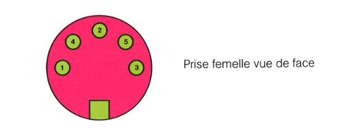
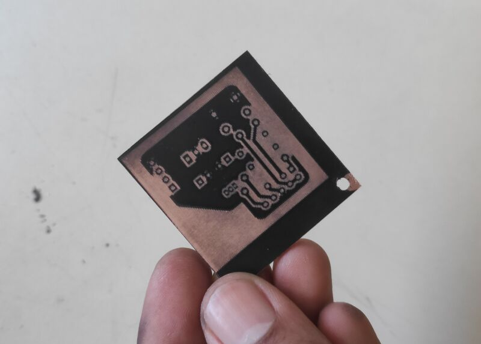

Pi to Minitel adapter
This small circuit translates logic levels between a Raspberry Pi and a Minitel terminal. It was used for 3615-YouTube.
Why

The Minitel 1B has a DIN-5 port at the back that can be used for serial communication with a Raspberry Pi. Unfortunately the voltage level used by the two devices are different: when listening on its recieve port, the Minitel pulls the line at 12V, which is more than what the Raspberry Pi can handle. Therefore we need a circuit to convert this back to 3.3V.
How
I made a board using Pila's design (FR). Since the Minitel 1B also provides a 8.5V supply through its DIN-5 port, I added a regulator to power the Pi through its GPIO pins. The schematics can be downloaded here.
The build
The circuit was designed with KiCad. I used two-sided PCB blanks that I spraypainted black before etching the design with a laser-cutter.

I then proceeded to chemically etch the boards, cut it and drill holes for the components.
The whole board fits on top of the Pi's GPIO. I also added a pushbutton to turn the Pi on and off without a computer.